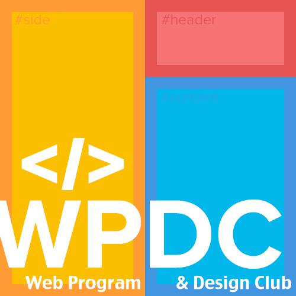

<!-- navbar.html -->
<nav class="navbar navbar-expand-lg">
  <div class="container" style="padding-top: 0px !important;">
    <a class="navbar-brand navbar-logo" href="index.html">
      
      <b> 中山網路程式設計研究社</b>
    </a>
    <button class="navbar-toggler" type="button" data-toggle="collapse" data-target="#navbarSupportedContent"
      aria-controls="navbarSupportedContent" aria-expanded="false" aria-label="Toggle navigation">
      <span class="fas fa-bars"></span>
    </button>
    <div class="collapse navbar-collapse" id="navbarSupportedContent">
      <ul class="navbar-nav ml-auto">
        <li class="nav-item"> <a class="nav-link" href="#" data-scroll-nav="0">社團介紹</a> </li>
        <li class="nav-item"> <a class="nav-link" href="#" data-scroll-nav="1">目的</a> </li>
        <li class="nav-item"> <a class="nav-link" href="#" data-scroll-nav="2">課程資訊</a> </li>
        <li class="nav-item"> <a class="nav-link" href="#" data-scroll-nav="3">本屆幹部</a> </li>
        <li class="nav-item"> <a class="nav-link" href="#" data-scroll-nav="4">專案成果</a> </li>
        <li class="nav-item"> <a class="nav-link" href="#" data-scroll-nav="5">參與心得</a> </li>
        <li class="nav-item"> <a class="nav-link"
            href="https://drive.google.com/drive/folders/1Lb9AQ95_vy5-mFHNrPrQbrJAWNAg9tIV?usp=sharing"
            target="_blank">社團發展(會議記錄)</a></li>
        <li class="nav-item dropdown">
          <a class="nav-link dropdown-toggle" href="#" role="button" data-bs-toggle="dropdown"
            aria-expanded="false">開放教材</a>
          <ul class="dropdown-menu">
            <!-- 114-1 Web程式設計 -->
            <!-- <li class="dropdown-submenu">
                  <a class="dropdown-item dropdown-toggle" href="#" onclick="handleSubmenuClick(event, 'https://hackmd.io/@Renektonn/Hk1QoVpYA')" style="color: black;">114-1 Web程式設計</a>
                  <ul class="dropdown-menu">
                      <li><a class="dropdown-item" href="https://hackmd.io/@TycaC6flTSex7SRYOPVa9w/Bkybx-2Ogl" target="_blank" style="color: black;">L1 課程簡介 & 基本HTML</a></li>
                      <li><a class="dropdown-item" href="https://hackmd.io/@TycaC6flTSex7SRYOPVa9w/B15OcZn_ee" target="_blank" style="color: black;">L2 CSS入門</a></li>
                      
                  </ul>
              </li> -->
            <li class="dropdown-submenu">
              <a class="dropdown-item" target="_blank" rel="noopener noreferrer"
                href="https://hackmd.io/@TycaC6flTSex7SRYOPVa9w/BJO11bh_gl/%2FsVL5m7isTuCx3dVmd2jYtA?fbclid=IwZXh0bgNhZW0CMTAAYnJpZBExNlZqUndBRk1makdHQ0xZT3NydGMGYXBwX2lkEDIyMjAzOTE3ODgyMDA4OTIAAR7nXlVhKjaN8tjNZNnNuEe_R9rERHQypeyUFKielQJ9zpvFBXpNUyEcjyEUew_aem_Nx9n9hsG5m-BPtlD9LmdNA"
                style="color: black;">114-1 Web程式設計</a>
            </li>
            <!-- 114-1 從零開始學 C 語言：基礎程式設計入門 -->
            <li class="dropdown-submenu">
              <a class="dropdown-item" target="_blank" rel="noopener noreferrer"
                href="https://drive.google.com/drive/folders/1-dz5bRFxktyAX6M0OzFmoVj4nsib5PO0?usp=sharing"
                style="color: black;">114-1 從零開始學 C 語言：基礎程式設計入門</a>

            </li>
            <li class="dropdown-submenu">
              <a class="dropdown-item" target="_blank" rel="noopener noreferrer"
                href="https://drive.google.com/drive/folders/1mH4_zRawu7g3S0UszAQtdA_j-dzgPpQv?usp=sharing"
                style="color: black;">114-2 React.js</a>
            </li>
            <!-- 114-1 從零開始學 C 語言：基礎程式設計入門 -->
            <li class="dropdown-submenu">
              <a class="dropdown-item" target="_blank" rel="noopener noreferrer"
                href="https://drive.google.com/drive/folders/1xNaoDw5zmLntWobwsssZcZ5Oy81FnxFB?usp=sharing"
                style="color: black;">114-2 猴子也能學會的深度學習</a>

            </li>


          </ul>
        </li>
        <li class="nav-item"> <a class="nav-link" href="history.html">歷代網研</a> </li>
        <li class="nav-item"> <a class="nav-link" href="#" data-scroll-nav="7">聯絡我們</a> </li>
      </ul>
    </div>
  </div>
</nav>

<script>
  // 處理子選單點擊事件
  function handleSubmenuClick(event, url) {
    // 檢查是否在手機版本
    if (window.innerWidth <= 991) {
      // 手機版本：切換子選單顯示
      event.preventDefault();
      const submenu = event.target.nextElementSibling;
      const isVisible = submenu.style.display === 'block';

      // 隱藏所有其他子選單
      document.querySelectorAll('.dropdown-submenu .dropdown-menu').forEach(menu => {
        menu.style.display = 'none';
      });

      // 切換當前子選單
      submenu.style.display = isVisible ? 'none' : 'block';
    } else {
      // 桌面版本：直接跳轉到連結
      window.open(url, '_blank');
    }
  }

  // 處理視窗大小改變
  window.addEventListener('resize', function () {
    if (window.innerWidth > 991) {
      // 桌面版本時隱藏所有手機版的子選單
      document.querySelectorAll('.dropdown-submenu .dropdown-menu').forEach(menu => {
        menu.style.display = '';
      });
    }
  });

  // 點擊外部時關閉所有下拉選單
  document.addEventListener('click', function (event) {
    if (!event.target.closest('.dropdown')) {
      document.querySelectorAll('.dropdown-submenu .dropdown-menu').forEach(menu => {
        menu.style.display = 'none';
      });
    }
  });
</script>
<script>
  function getPageNameWithoutExtension() {
    const path = window.location.pathname;
    const filename = path.substring(path.lastIndexOf('/') + 1);
    return filename.replace('.html', '');
  }
  function hideNavItems(navNumbers) {
    navNumbers.forEach(num => {
      const navItem = document.querySelector(`a[data-scroll-nav="${num}"]`);
      if (navItem) {
        navItem.parentElement.style.display = 'none'; // 隱藏整個 li
        // 或者只隱藏連結本身
        // navItem.style.display = 'none';
      }
    });
  }
  web = getPageNameWithoutExtension();
  console.log("Current page:", web);
  if (web == "history" || web == "class" || web == "class2" || web.includes("hak")) {
    // 隱藏所有導航項目
    hideNavItems([0, 1, 2, 3, 4, 5]);
    console.log(web);
  }
</script>

<style>
  .navbar {
    padding-top: 30px;
  }

  /* 載入動畫 */
  #navbar-container.loading {
    height: 60px;
    display: flex;
    justify-content: center;
    align-items: center;
  }

  .loading-spinner {
    border: 2px solid #f3f3f3;
    border-top: 2px solid #007bff;
    border-radius: 50%;
    width: 20px;
    height: 20px;
    animation: spin 1s linear infinite;
  }

  @keyframes spin {
    0% {
      transform: rotate(0deg);
    }

    100% {
      transform: rotate(360deg);
    }
  }

  /* 下拉選單基本樣式 - 平衡間距 */
  .dropdown-menu {
    padding: 6px 0;
    /* 適中的上下內距 */
  }

  .dropdown-item {
    padding: 8px 16px;
    /* 回到適中的間距 */
    font-size: 14px;
    line-height: 1.4;
    /* 稍微增加行高 */
  }

  /* 多層下拉選單樣式 - 子選單向左展開 */
  .dropdown-submenu {
    position: relative;
  }

  .dropdown-submenu .dropdown-menu {
    top: 0;
    right: 100%;
    /* 子選單出現在左邊 */
    left: auto;
    margin-top: -1px;
    border-radius: 6px 0 6px 6px;
    min-width: 200px;
    padding: 6px 0;
    /* 子選單也使用適中間距 */
    display: none;
    /* 預設隱藏 */
  }

  /* 桌面版本：hover 顯示子選單 */
  @media (min-width: 992px) {
    .dropdown-submenu:hover .dropdown-menu {
      display: block !important;
    }
  }

  /* 修正箭頭位置 - 垂直置中 */
  .dropdown-submenu>.dropdown-item {
    position: relative;
    padding-right: 30px;
    /* 為箭頭留出空間 */
    cursor: pointer;
  }

  .dropdown-submenu>.dropdown-item::after {
    content: "";
    position: absolute;
    top: 50%;
    /* 垂直置中 */
    right: 12px;
    /* 距離右邊的距離 */
    transform: translateY(-50%);
    /* 確保完全垂直置中 */
    width: 0;
    height: 0;
    border-color: transparent;
    border-style: solid;
    border-width: 4px 4px 4px 0;
    /* 稍微縮小箭頭 */
    border-right-color: #6c757d;
  }

  .dropdown-submenu:hover>.dropdown-item::after {
    border-right-color: #495057;
  }

  /* 響應式設計 - 手機版本 */
  @media (max-width: 991px) {
    .dropdown-submenu .dropdown-menu {
      position: static;
      float: none;
      width: auto;
      margin-top: 0;
      background-color: #f8f9fa;
      border: 0;
      border-radius: 0;
      box-shadow: none;
      padding-left: 20px;
      right: auto;
      display: none;
      /* 手機版預設隱藏 */
    }

    .dropdown-submenu>.dropdown-item::after {
      border-width: 4px 0 4px 4px;
      /* 手機版箭頭向下 */
      border-left-color: #6c757d;
      border-right-color: transparent;
    }

    .dropdown-submenu .dropdown-item {
      font-size: 12px;
      padding: 8px 15px;
      /* 手機版也使用適中間距 */
    }

    .dropdown-submenu>.dropdown-item {
      padding-right: 30px;
      /* 手機版也需要箭頭空間 */
    }
  }

  /* navbar container 改善空間擠壓 */
  .navbar>.container {
    display: flex;
    flex-wrap: wrap;
    align-items: center;
    justify-content: space-between;
  }

  /* 基本 nav 字型與間距 */
  .navbar .nav-item a {
    color: #fff;
    font-size: 13px;
    font-weight: 600;
    padding: 8px 12px;
    transition: all 0.3s ease;
  }

  .navbar .nav-item a:hover {
    background-color: rgba(255, 255, 255, 0.2);
    border-radius: 8px;
    color: #01295c;
  }

  /* RWD: 991px 以下變成 dropdown 垂直 */
  @media (max-width: 991px) {
    .navbar .navbar-collapse {
      flex-direction: column;
      align-items: flex-start;
      background-color: #7a95bb;
      padding: 15px;
      animation: slideDown 0.3s ease-out;
    }

    .navbar .navbar-nav {
      width: 100%;
      display: flex;
      flex-direction: column;
    }

    .navbar .nav-item {
      width: 100%;
      margin: 5px 0;
    }

    .navbar .nav-item a {
      font-size: 14px;
      padding: 10px;
      white-space: normal;
      width: 100%;
      display: block;
    }
  }

  /* 動畫效果 */
  @keyframes slideDown {
    from {
      opacity: 0;
      transform: translateY(-10px);
    }

    to {
      opacity: 1;
      transform: translateY(0);
    }
  }
</style>